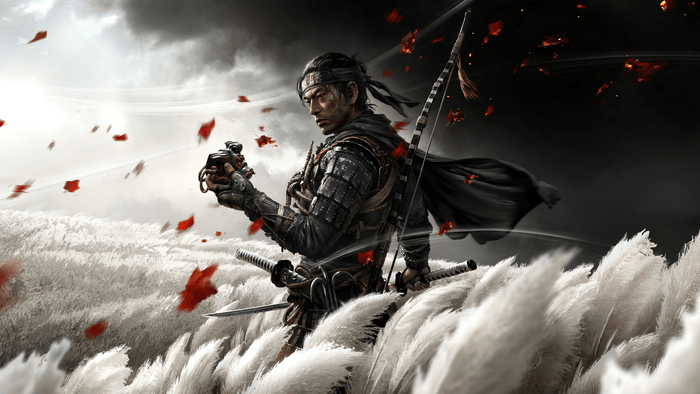

The game is set on the island of Tsushima, which is under attack by the Mongol Empire. Players assume the role of Jin Sakai, a skilled samurai warrior and the last surviving member of his clan. Jin must adapt and evolve his combat techniques to become the "Ghost" - a stealthy and unconventional warrior - to defend his homeland.
